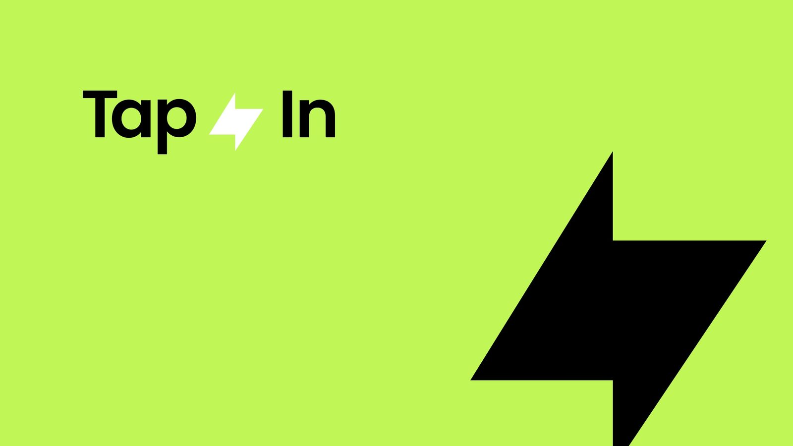
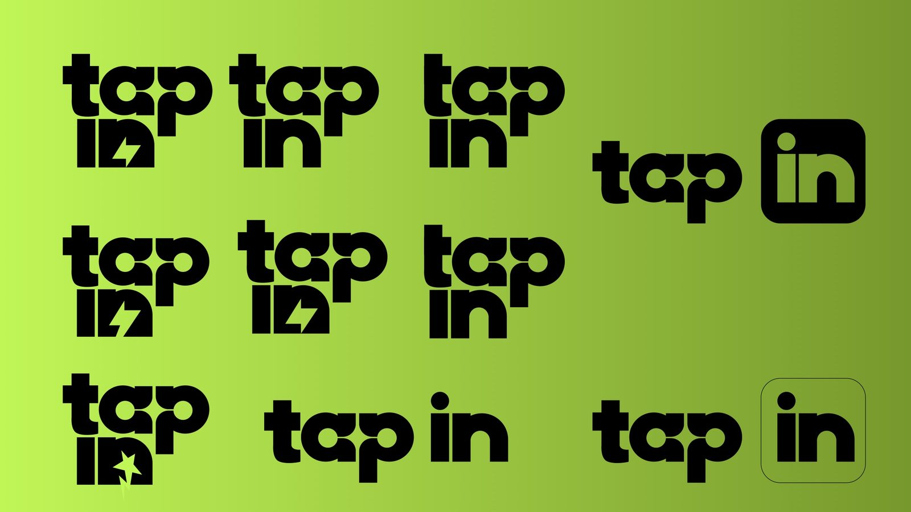
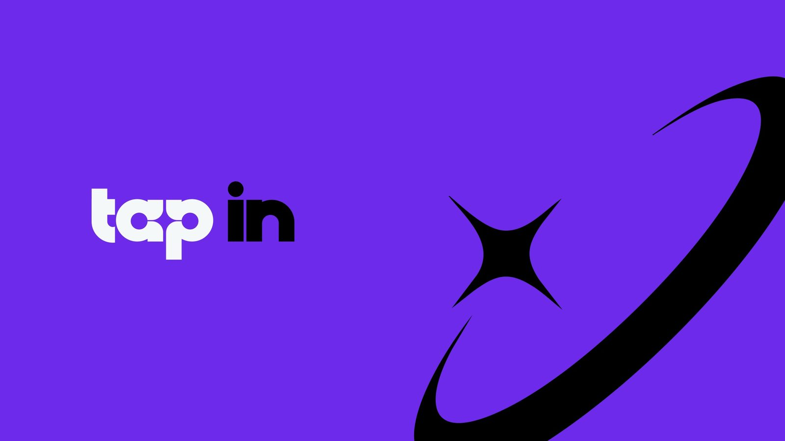
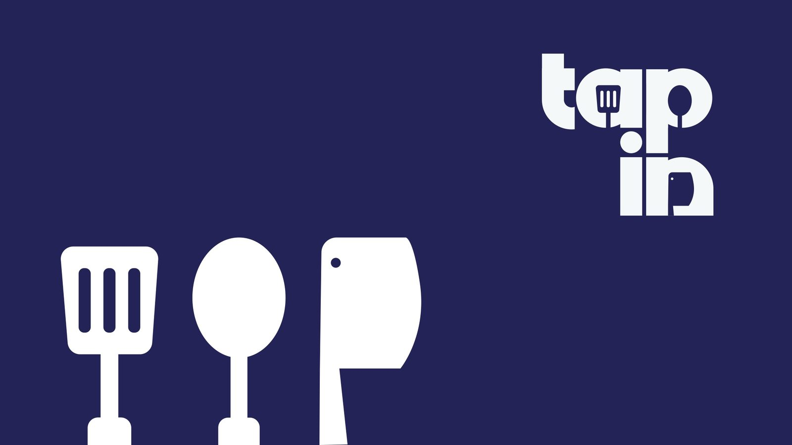
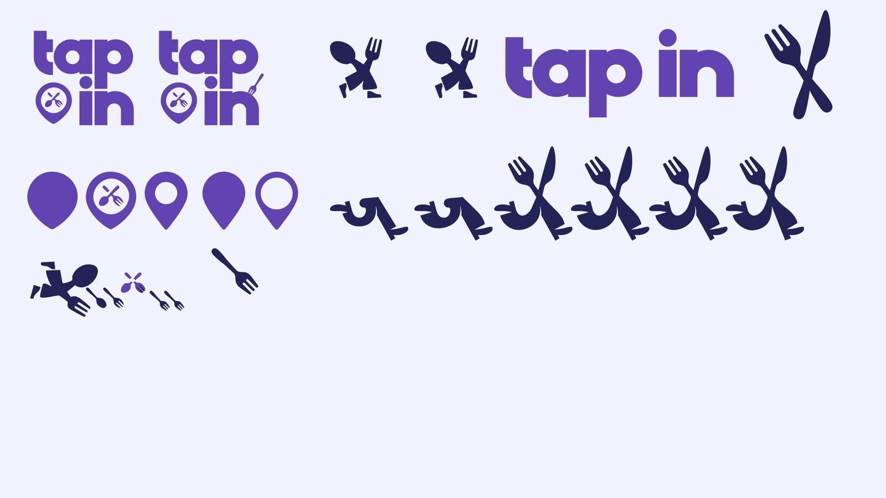
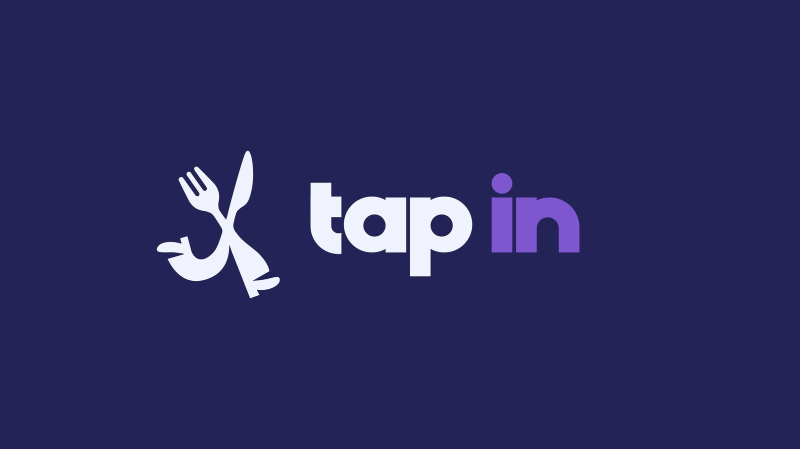

<title>Forky paso a paso</title>
<meta name="claude:viewport-fit-sides" content="cover">
<link rel="preconnect" href="https://fonts.googleapis.com">
<link rel="preconnect" href="https://fonts.gstatic.com" crossorigin>
<link rel="stylesheet" href="https://fonts.googleapis.com/css2?family=Geist:wght@400;500&family=Geist+Mono:wght@400&family=Poppins:wght@400;600&display=swap">
<style>
    /* Tres propuestas para la decisión 01 del caso Tap In (Forky), hechas con el material real del archivo de
       branding: la evolución de la marca, las formas que se exploraron y la doble lectura. Escena fija que
       avanza con el scroll y selector flotante. Un solo aspecto claro a propósito, como el caso */
    :root {
        --papel: #F4F3FA; --tinta: #1C1A2E; --gris: #57556B; --gris-2: #8A889E; --linea: rgba(45, 37, 96, 0.12);
        --empresa: #2D2560; --campus: #4A3CAE; --connect: #6B5CE7; --health: #9B8EF0; --soft: #C8C0F8; --tint: #EEEDFE;
        --f-marca: 'Poppins', system-ui, sans-serif; --f-texto: 'Geist', system-ui, sans-serif; --f-mono: 'Geist Mono', ui-monospace, monospace;
        --margen: clamp(20px, 3.2vw, 48px);
        --ease: cubic-bezier(0.16, 1, 0.3, 1); --curva: cubic-bezier(0.34, 1.25, 0.64, 1);
        color-scheme: light;
    }
    * { box-sizing: border-box; }
    body { margin: 0; background: var(--papel); color: var(--tinta); font: 15px/1.5 var(--f-texto); -webkit-font-smoothing: antialiased; overflow-x: hidden; }
    .mono { font-family: var(--f-mono); font-size: 12px; }
    .marca { display: block; background: currentColor; -webkit-mask: var(--svg) center / contain no-repeat; mask: var(--svg) center / contain no-repeat; }

    /* --- ESCENA COMÚN --- */
    .escena { --p: 0; position: relative; height: 380svh; }
    .fijo { position: sticky; top: 0; height: 100svh; overflow: hidden; display: grid; grid-template-columns: repeat(12, minmax(0, 1fr)); column-gap: 16px; align-items: center; padding: 0 max(var(--margen), env(safe-area-inset-right, 0px)) 0 max(var(--margen), env(safe-area-inset-left, 0px)); }
    .dec { grid-column: 1 / span 4; display: flex; flex-direction: column; gap: 14px; max-width: 36ch; z-index: 2; }
    .dec .num { font: 600 clamp(72px, 7.4vw, 128px) / 0.78 var(--f-marca); letter-spacing: -0.06em; color: var(--soft); margin-bottom: 6px; }
    .dec .eti { display: inline-flex; align-items: center; gap: 8px; color: var(--gris); }
    .dec .eti::before { content: ''; width: 6px; height: 6px; border-radius: 50%; background: var(--campus); }
    .dec h2 { margin: 0; font: 600 clamp(28px, 2.7vw, 44px) / 1.02 var(--f-marca); letter-spacing: -0.04em; text-wrap: balance; }
    .dec p { margin: 0; font-size: clamp(16px, 1.25vw, 19px); line-height: 1.5; color: var(--gris); }
    .dec .porque { display: flex; flex-direction: column; gap: 6px; padding-top: 14px; border-top: 1px solid var(--linea); color: var(--tinta); }
    .dec .porque .mono { color: var(--gris-2); }
    .vista { display: none; }
    [data-v="a"] .va, [data-v="b"] .vb, [data-v="c"] .vc { display: block; }
    [data-v="a"] .dec-c, [data-v="b"] .dec-c { display: none; }
    [data-v="c"] .dec-ab { display: none; }

    /* =======================================================
       A · DEL RAYO A FORKY
       ======================================================= */
    /* Las láminas reales del archivo de branding pasan en horizontal: de la primera idea (un rayo verde) a
       Forky con el wordmark. Cada una con su número y una línea */
    .va { grid-column: 5 / -1; align-self: center; position: relative; margin-right: calc(-1 * max(var(--margen), env(safe-area-inset-right, 0px))); overflow: hidden; padding: 24px 0 64px; }
    .riel { --n: 6; --ancho: 44vw; --gap: 20px; display: flex; gap: var(--gap); width: max-content; transform: translateX(calc(var(--p) * -1 * ((var(--n) - 1) * (var(--ancho) + var(--gap))))); will-change: transform; }
    .lamina { width: var(--ancho); display: flex; flex-direction: column; gap: 12px; opacity: 0.45; transform: scale(0.94); transform-origin: 0 50%; transition: opacity 400ms, transform 600ms var(--ease); }
    .lamina.on { opacity: 1; transform: none; }
    .lamina img { display: block; width: 100%; aspect-ratio: 16 / 9; object-fit: cover; border-radius: 16px; box-shadow: 0 30px 60px -40px rgba(45, 37, 96, 0.55); }
    .lamina figcaption { display: flex; gap: 12px; align-items: baseline; }
    .lamina figcaption b { font: 600 18px var(--f-marca); letter-spacing: -0.02em; }
    .lamina figcaption .mono { color: var(--campus); }
    .lamina.final img { box-shadow: 0 0 0 3px var(--campus), 0 30px 60px -36px rgba(74, 60, 174, 0.7); }
    .avance { position: absolute; left: 0; right: var(--margen); bottom: 20px; height: 2px; background: var(--linea); }
    .avance::after { content: ''; position: absolute; inset: 0; background: var(--campus); transform-origin: 0 50%; transform: scaleX(var(--p)); }

    /* =======================================================
       B · LAS FORMAS
       ======================================================= */
    /* Las formas que se exploraron, en orden: se encienden una a una con el scroll y al final se apartan para
       que aparezca Forky con el wordmark de Campus */
    .vb { grid-column: 6 / -1; position: relative; }
    .formas { display: grid; grid-template-columns: repeat(4, minmax(0, 1fr)); gap: 12px; transition: opacity 600ms var(--ease), transform 700ms var(--ease); }
    .forma { position: relative; display: grid; place-items: center; aspect-ratio: 1; border-radius: 18px; background: #FFFFFF; box-shadow: 0 0 0 1px var(--linea); color: var(--gris-2); opacity: 0.4; transform: scale(0.94); transition: opacity 400ms, transform 600ms var(--curva), color 400ms, box-shadow 400ms; }
    .forma .marca { width: 64%; aspect-ratio: 1; }
    .forma .mono { position: absolute; left: 12px; top: 10px; color: var(--gris-2); }
    .forma.ya { opacity: 0.75; transform: none; color: var(--soft); }
    .forma.on { opacity: 1; transform: scale(1.04); color: var(--campus); box-shadow: 0 0 0 2px var(--campus), 0 24px 40px -24px rgba(74, 60, 174, 0.6); }
    .rotulo { position: relative; height: 1.5em; margin-top: 22px; overflow: hidden; font: 600 clamp(20px, 1.8vw, 28px) var(--f-marca); letter-spacing: -0.03em; }
    .rotulo span { position: absolute; inset: 0; opacity: 0; transform: translateY(100%); transition: opacity 300ms, transform 500ms var(--ease); }
    .rotulo span.on { opacity: 1; transform: none; }
    .final-b { position: absolute; inset: 0 0 auto; display: grid; place-items: center; gap: 18px; aspect-ratio: 2 / 1; color: var(--campus); opacity: 0; transform: scale(0.85); transition: opacity 600ms var(--ease), transform 800ms var(--curva); pointer-events: none; }
    .final-b .forky { width: 30%; aspect-ratio: 142 / 158; }
    .final-b .lockup { display: flex; align-items: baseline; gap: 8px; }
    .final-b .lockup .wm { width: 110px; aspect-ratio: 389.87 / 150.6; }
    .final-b .lockup b { font: 600 24px var(--f-marca); }
    .vb.listo .formas { opacity: 0.08; transform: scale(0.96); }
    .vb.listo .final-b { opacity: 1; transform: none; }

    /* =======================================================
       C · DOBLE LECTURA
       ======================================================= */
    /* A primera vista, tenedor y cuchillo; mirando bien, alguien que corre. El scroll pasa de una lectura a la
       otra y después aparecen las cinco reglas que salieron de Forky. Al pasar el mouse, vuelve a los cubiertos */
    .vc { grid-column: 5 / -1; justify-self: center; position: relative; width: min(100%, 72svh); aspect-ratio: 1; }
    .disco { position: absolute; inset: 9%; border-radius: 50%; background: radial-gradient(closest-side, #FFFFFF, var(--tint) 72%, transparent 73%); }
    .lectura { position: absolute; inset: 24%; display: grid; place-items: center; color: var(--campus); transition: opacity 500ms var(--ease), transform 700ms var(--curva); }
    .lectura .marca { width: 100%; height: 100%; }
    .vc { --a: clamp(0, var(--x, 0) * 2, 1); --b: clamp(0, var(--x, 0) * 2 - 1, 1); --cambio: clamp(0, (var(--x, 0) - 0.5) * 30, 1); }
    /* Se da vuelta como una tarjeta: los cubiertos giran de canto y del otro lado aparece Forky, sin superponerse */
    .l-cub { opacity: calc(1 - var(--cambio)); transform: perspective(900px) rotateY(calc(var(--a) * 90deg)); }
    .l-per { opacity: var(--cambio); transform: perspective(900px) rotateY(calc((1 - var(--b)) * -90deg)); }
    .vc:hover .l-cub { opacity: 1; transform: none; } .vc:hover .l-per { opacity: 0; }
    .etq { position: absolute; display: flex; align-items: center; gap: 8px; padding: 6px 12px; border-radius: 999px; background: #FFFFFF; box-shadow: 0 0 0 1px var(--linea), 0 10px 24px -14px rgba(45, 37, 96, 0.4); font-size: 13px; white-space: nowrap; opacity: 0; transform: translateY(8px); transition: opacity 400ms, transform 500ms var(--ease); }
    .etq::before { content: ''; width: 6px; height: 6px; border-radius: 50%; background: var(--campus); }
    .etq.on { opacity: 1; transform: none; }
    .regla { position: absolute; display: flex; flex-direction: column; gap: 2px; max-width: 200px; padding: 10px 14px; border-radius: 14px; background: #FFFFFF; box-shadow: 0 0 0 1px var(--linea), 0 14px 30px -18px rgba(45, 37, 96, 0.45); opacity: 0; transform: translateY(10px) scale(0.96); transition: opacity 400ms, transform 600ms var(--curva); }
    .regla b { font: 600 15px var(--f-marca); letter-spacing: -0.02em; }
    .regla span { font-size: 12px; color: var(--gris); }
    .regla.on { opacity: 1; transform: none; }
    .regla .mono { color: var(--campus); }
    .pista-c { position: absolute; left: 50%; bottom: 2%; translate: -50% 0; color: var(--gris-2); }

    /* --- SELECTOR Y NOTAS --- */
    .selector { position: fixed; left: 50%; bottom: calc(18px + env(safe-area-inset-bottom, 0px)); z-index: 20; display: flex; gap: 4px; padding: 5px; border-radius: 999px; background: rgba(28, 26, 46, 0.88); backdrop-filter: blur(14px); -webkit-backdrop-filter: blur(14px); translate: -50% 0; }
    .selector button { display: flex; align-items: center; gap: 8px; padding: 9px 14px; border: 0; border-radius: 999px; background: transparent; color: rgba(255, 255, 255, 0.72); font: 500 14px var(--f-texto); white-space: nowrap; cursor: pointer; }
    .selector button b { font: 400 11px var(--f-mono); opacity: 0.7; }
    .selector button[aria-pressed="true"] { background: #FFFFFF; color: var(--tinta); }
    .selector button:focus-visible { outline: 2px solid var(--health); outline-offset: 2px; }
    .notas { padding-block: 80px 140px; padding-left: max(var(--margen), env(safe-area-inset-left, 0px)); padding-right: max(var(--margen), env(safe-area-inset-right, 0px)); background: var(--tinta); color: #F4F3FB; display: grid; grid-template-columns: repeat(12, minmax(0, 1fr)); column-gap: 16px; row-gap: 56px; }
    .notas h2 { grid-column: 1 / span 3; margin: 0; font: 400 12px var(--f-mono); color: rgba(238, 237, 254, 0.66); padding-top: 6px; }
    .notas .bloque { grid-column: 4 / -1; min-width: 0; }
    .notas .bloque > p:first-child { margin: 0 0 24px; max-width: 36ch; font: 600 clamp(22px, 2.2vw, 32px) / 1.12 var(--f-marca); letter-spacing: -0.035em; }
    .lista { margin: 0; padding: 0; list-style: none; border-top: 1px solid rgba(155, 142, 240, 0.22); }
    .lista li { display: grid; grid-template-columns: minmax(0, 1fr) minmax(0, 1.3fr); gap: 20px; padding: 14px 0; border-bottom: 1px solid rgba(155, 142, 240, 0.22); }
    .lista li span:first-child { color: rgba(238, 237, 254, 0.66); }
    .ops { display: grid; grid-template-columns: repeat(3, minmax(0, 1fr)); gap: 14px; }
    .op { display: flex; flex-direction: column; gap: 10px; padding: 20px; border-radius: 18px; border: 1px solid rgba(155, 142, 240, 0.22); background: rgba(238, 237, 254, 0.03); color: inherit; text-align: left; font: inherit; cursor: pointer; }
    .op[aria-pressed="true"] { border-color: var(--health); background: rgba(155, 142, 240, 0.1); }
    .op .mono { color: var(--health); }
    .op strong { font: 600 20px / 1.1 var(--f-marca); letter-spacing: -0.03em; }
    .op p { margin: 0; color: rgba(238, 237, 254, 0.72); }
    .op .rec { align-self: flex-start; padding: 3px 9px; border-radius: 999px; background: var(--health); color: var(--tinta); font: 500 11px var(--f-mono); }

    @media (max-width: 768px) {
        .escena { height: 420svh; }
        .fijo { grid-template-columns: minmax(0, 1fr); align-content: start; row-gap: 18px; padding-top: 64px; }
        .fijo > * { grid-column: 1 !important; }
        .dec { gap: 8px; }
        .dec .num, .dec p:not(.porque) { display: none; }
        .dec h2 { font-size: 24px; }
        .va { margin-right: calc(-1 * max(var(--margen), env(safe-area-inset-right, 0px))); }
        .riel { --ancho: 82vw; --gap: 12px; }
        .formas { grid-template-columns: repeat(4, minmax(0, 1fr)); gap: 6px; }
        .forma .mono { display: none; }
        .vc { width: 100%; }
        .regla { max-width: 150px; padding: 8px 10px; }
        .regla span { display: none; }
        .notas { grid-template-columns: minmax(0, 1fr); }
        .notas h2, .notas .bloque { grid-column: 1; }
        .lista li { grid-template-columns: minmax(0, 1fr); gap: 4px; }
        .ops { grid-template-columns: minmax(0, 1fr); }
        .selector button span { display: none; }
    }
    @media (prefers-reduced-motion: reduce) { * { transition-duration: 1ms !important; } }
</style>

<section class="escena" data-v="a" id="escena" aria-label="Decisión 01: Forky">
    <div class="fijo">
        <div class="dec dec-ab">
            <span class="num" aria-hidden="true">01</span>
            <span class="eti mono">Decisión 01</span>
            <h2>Unos cubiertos que corren</h2>
            <p>Partió de un tenedor y un cuchillo; después vinieron las patas y un brazo. Cerca de treinta formas hasta llegar a Forky.</p>
            <p class="porque"><span class="mono">Por qué</span>Una doble lectura se recuerda. Forky quedó como el ADN de todo el ecosistema</p>
        </div>
        <div class="dec dec-c">
            <span class="num" aria-hidden="true">01</span>
            <span class="eti mono">Decisión 01</span>
            <h2>A la rápida, cubiertos. Mirando bien, alguien que corre</h2>
            <p>La doble lectura fue la regla sagrada: de Forky salieron las cinco reglas para todos los isotipos del ecosistema.</p>
        </div>

        <!-- A · DEL RAYO A FORKY -->
        <div class="vista va">
            <div class="riel">
                <figure class="lamina" data-l="0"><figcaption><span class="mono">01</span><b>La primera idea: un rayo en verde</b></figcaption></figure>
                <figure class="lamina" data-l="1"><figcaption><span class="mono">02</span><b>Probando el wordmark apilado</b></figcaption></figure>
                <figure class="lamina" data-l="2"><figcaption><span class="mono">03</span><b>Llega el morado</b></figcaption></figure>
                <figure class="lamina" data-l="3"><figcaption><span class="mono">04</span><b>Los cubiertos entran a las letras</b></figcaption></figure>
                <figure class="lamina" data-l="4"><figcaption><span class="mono">05</span><b>Pins, una cuchara que corre y Forky</b></figcaption></figure>
                <figure class="lamina final" data-l="5"><figcaption><span class="mono">06</span><b>Forky y el wordmark</b></figcaption></figure>
            </div>
            <span class="avance" aria-hidden="true"></span>
        </div>

        <!-- B · LAS FORMAS -->
        <div class="vista vb" data-vb>
            <div class="formas">
                <div class="forma" data-f="0"><span class="mono">01</span><span class="marca" style="--svg:url('pin.png')"></span></div>
                <div class="forma" data-f="1"><span class="mono">02</span><span class="marca" style="--svg:url('cuchara.png')"></span></div>
                <div class="forma" data-f="2"><span class="mono">03</span><span class="marca" style="--svg:url('cubiertos.png')"></span></div>
                <div class="forma" data-f="3"><span class="mono">04</span><span class="marca" style="--svg:url('cuerpo.png')"></span></div>
                <div class="forma" data-f="4"><span class="mono">05</span><span class="marca" style="--svg:url('afina-1.png')"></span></div>
                <div class="forma" data-f="5"><span class="mono">06</span><span class="marca" style="--svg:url('afina-2.png')"></span></div>
                <div class="forma" data-f="6"><span class="mono">07</span><span class="marca" style="--svg:url('afina-3.png')"></span></div>
                <div class="forma" data-f="7"><span class="mono">08</span><span class="marca" style="--svg:url('afina-4.png')"></span></div>
            </div>
            <div class="rotulo" aria-live="polite">
                <span data-r="0">Un pin con cubiertos</span><span data-r="1">Una cuchara que corre</span><span data-r="2">Tenedor y cuchillo</span><span data-r="3">Les salen patas</span>
                <span data-r="4">Después, un brazo</span><span data-r="5">Afinando la pose</span><span data-r="6">Afinando la pose</span><span data-r="7">Afinando la pose</span><span data-r="8">Forky</span>
            </div>
            <div class="final-b" aria-hidden="true"><span class="marca forky" style="--svg:url('forky.svg')"></span><span class="lockup"><span class="marca wm" style="--svg:url('wordmark.svg')"></span><b>Campus</b></span></div>
        </div>

        <!-- C · DOBLE LECTURA -->
        <div class="vista vc" data-vc>
            <span class="disco"></span>
            <span class="lectura l-cub"><span class="marca" style="--svg:url('cubiertos.png')"></span></span>
            <span class="lectura l-per"><span class="marca" style="--svg:url('forky.svg')"></span></span>
            <span class="etq" data-e="cub" style="left: 8%; top: 22%">Un tenedor</span>
            <span class="etq" data-e="cub" style="right: 6%; top: 18%">Un cuchillo</span>
            <span class="etq" data-e="per" style="left: 4%; top: 58%">Un brazo</span>
            <span class="etq" data-e="per" style="right: 4%; bottom: 20%">Las patas</span>
            <div class="regla" data-g="0" style="left: -2%; top: 2%"><span class="mono">01</span><b>Doble lectura</b><span>A primera vista una cosa; mirando bien, otra</span></div>
            <div class="regla" data-g="1" style="right: -4%; top: 6%"><span class="mono">02</span><b>Silueta plana</b><span>Funciona como mancha, sin decoraciones</span></div>
            <div class="regla" data-g="2" style="right: -8%; top: 46%"><span class="mono">03</span><b>Movimiento y actitud</b><span>Forky casi danza</span></div>
            <div class="regla" data-g="3" style="right: 6%; bottom: 0"><span class="mono">04</span><b>Abstracción media</b><span>Ni literal ni críptico</span></div>
            <div class="regla" data-g="4" style="left: -4%; bottom: 8%"><span class="mono">05</span><b>No ser obvio</b><span>Campus no tiene una hamburguesa, tiene cubiertos</span></div>
            <span class="pista-c mono">Pasa el mouse: vuelven los cubiertos</span>
        </div>
    </div>
</section>

<nav class="selector" aria-label="Propuestas para Forky">
    <button type="button" id="sel-a" data-ir="a" aria-pressed="true"><b>A</b><span>Del rayo a Forky</span></button>
    <button type="button" id="sel-b" data-ir="b" aria-pressed="false"><b>B</b><span>Las formas</span></button>
    <button type="button" id="sel-c" data-ir="c" aria-pressed="false"><b>C</b><span>Doble lectura</span></button>
</nav>

<main class="notas">
    <h2>Audit de la decisión 01</h2>
    <div class="bloque">
        <p>La idea funciona, pero cuenta poco del proceso real y no usa el material que existe.</p>
        <ul class="lista">
            <li><span>Los cinco pasos son recortes sin contexto: no se ve de dónde partió ni cuánto se exploró</span><span>Usar las láminas y las formas reales del archivo de branding (rayo verde, pins, cuchara que corre, afinaciones)</span></li>
            <li><span>El texto dice "doble lectura" pero la pieza nunca la muestra</span><span>Mostrar las dos lecturas: cubiertos y personaje, y dejar que el mouse vuelva a la primera</span></li>
            <li><span>Las cinco reglas que nacieron de Forky (las que guían todo el ecosistema) no aparecen</span><span>Que la decisión cierre con ellas: es lo que hace que Forky sea "el ADN"</span></li>
            <li><span>Escenario chico, mucho vacío arriba y una regla de pasos que se lee lejos</span><span>Escena más grande y protagonista; el avance se lee en la misma pieza</span></li>
            <li><span>360svh de scroll para cinco cambios de imagen</span><span>Cada tramo de scroll muestra algo nuevo: láminas, formas o lecturas</span></li>
        </ul>
    </div>
    <h2>Propuestas</h2>
    <div class="bloque">
        <p>Tres maneras de contar a Forky con el material real. Elige con el selector.</p>
        <div class="ops">
            <button type="button" class="op" id="op-a" data-ir="a" aria-pressed="true"><span class="mono">A · Del rayo a Forky</span><strong>La evolución de la marca</strong><p>Seis láminas del archivo de branding pasan en horizontal: del rayo verde a Forky con el wordmark. Es la más honesta sobre el proceso.</p></button>
            <button type="button" class="op" id="op-b" data-ir="b" aria-pressed="false"><span class="mono">B · Las formas</span><strong>Ocho formas, una elegida</strong><p>Las formas que se exploraron se encienden en orden (pin, cuchara, cubiertos, patas, brazo, afinaciones) y se apartan para que aparezca Forky.</p><span class="rec">Recomendada</span></button>
            <button type="button" class="op" id="op-c" data-ir="c" aria-pressed="false"><span class="mono">C · Doble lectura</span><strong>Cubiertos o personaje</strong><p>El scroll pasa de los cubiertos a Forky con sus partes rotuladas y cierra con las cinco reglas. El mouse vuelve a la primera lectura.</p></button>
        </div>
    </div>
</main>

<script>
    /* =======================================================
       INICIO JS · FORKY PASO A PASO
       ======================================================= */
    (function () {
        const escena = document.getElementById('escena');
        const quieto = window.matchMedia('(prefers-reduced-motion: reduce)').matches;
        const fijar = (v, a = 0, b = 1) => Math.min(Math.max(v, a), b);
        const laminas = [...escena.querySelectorAll('.lamina')];
        const vb = escena.querySelector('[data-vb]'), formas = [...vb.querySelectorAll('.forma')], rotulos = [...vb.querySelectorAll('[data-r]')];
        const vc = escena.querySelector('[data-vc]'), etqs = [...vc.querySelectorAll('.etq')], reglas = [...vc.querySelectorAll('.regla')];
        const pintar = () => {
            const r = escena.getBoundingClientRect(), p = fijar(-r.top / (r.height - window.innerHeight));
            escena.style.setProperty('--p', p.toFixed(4));
            const v = escena.dataset.v;
            if (v === 'a') { const k = Math.round(p * 5); laminas.forEach((l, i) => l.classList.toggle('on', i === k)); }
            if (v === 'b') {
                const k = Math.min(Math.floor(p * 9.5), 8);
                formas.forEach((f, i) => { f.classList.toggle('on', i === k); f.classList.toggle('ya', i < k); });
                rotulos.forEach((t, i) => t.classList.toggle('on', i === k));
                vb.classList.toggle('listo', k === 8);
            }
            if (v === 'c') {
                const x = fijar((p - 0.22) / 0.2);
                vc.style.setProperty('--x', x.toFixed(3));
                etqs.forEach(e => e.classList.toggle('on', e.dataset.e === 'cub' ? p > 0.04 && x < 0.3 : x > 0.85 && p < 0.55));
                reglas.forEach((g, i) => g.classList.toggle('on', p > 0.55 + i * 0.07));
            }
        };
        let pendiente = false;
        window.addEventListener('scroll', () => { if (!pendiente) { pendiente = true; requestAnimationFrame(() => { pendiente = false; pintar(); }); } }, { passive: true });
        window.addEventListener('resize', pintar);
        const botones = [...document.querySelectorAll('[data-ir]')];
        const elegir = v => {
            escena.dataset.v = v;
            botones.forEach(b => b.setAttribute('aria-pressed', String(b.dataset.ir === v)));
            try { localStorage.setItem('forky-tapin', v); } catch (e) { /* sin almacenamiento */ }
            pintar();
        };
        botones.forEach(b => b.addEventListener('click', () => { elegir(b.dataset.ir); if (b.classList.contains('op')) window.scrollTo({ top: 0, behavior: quieto ? 'auto' : 'smooth' }); }));
        let guardado = null;
        try { guardado = localStorage.getItem('forky-tapin'); } catch (e) { /* sin almacenamiento */ }
        const inicial = ['a', 'b', 'c'].includes(location.hash.slice(1)) ? location.hash.slice(1) : guardado;
        elegir(inicial || 'a');
    })();
    /* =======================================================
       FIN JS · FORKY PASO A PASO
       ======================================================= */
</script>
